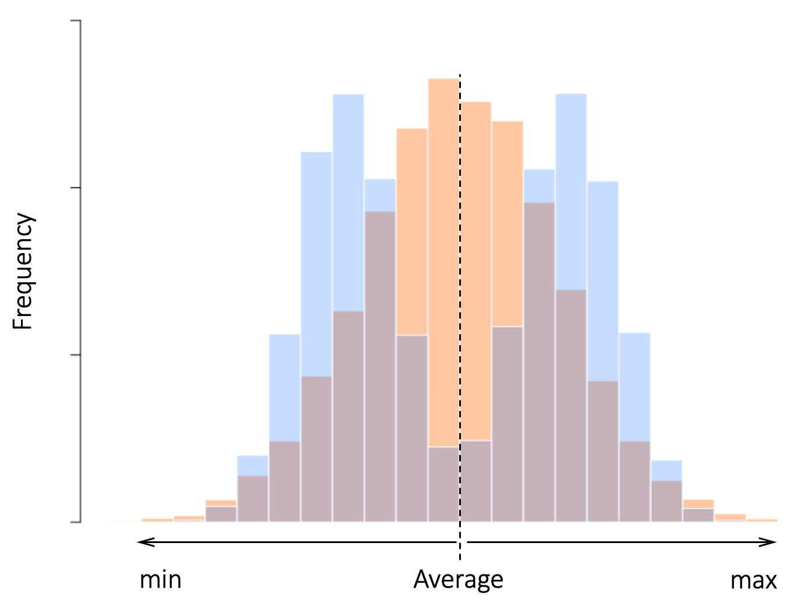
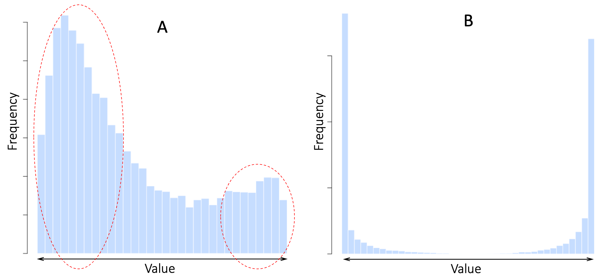
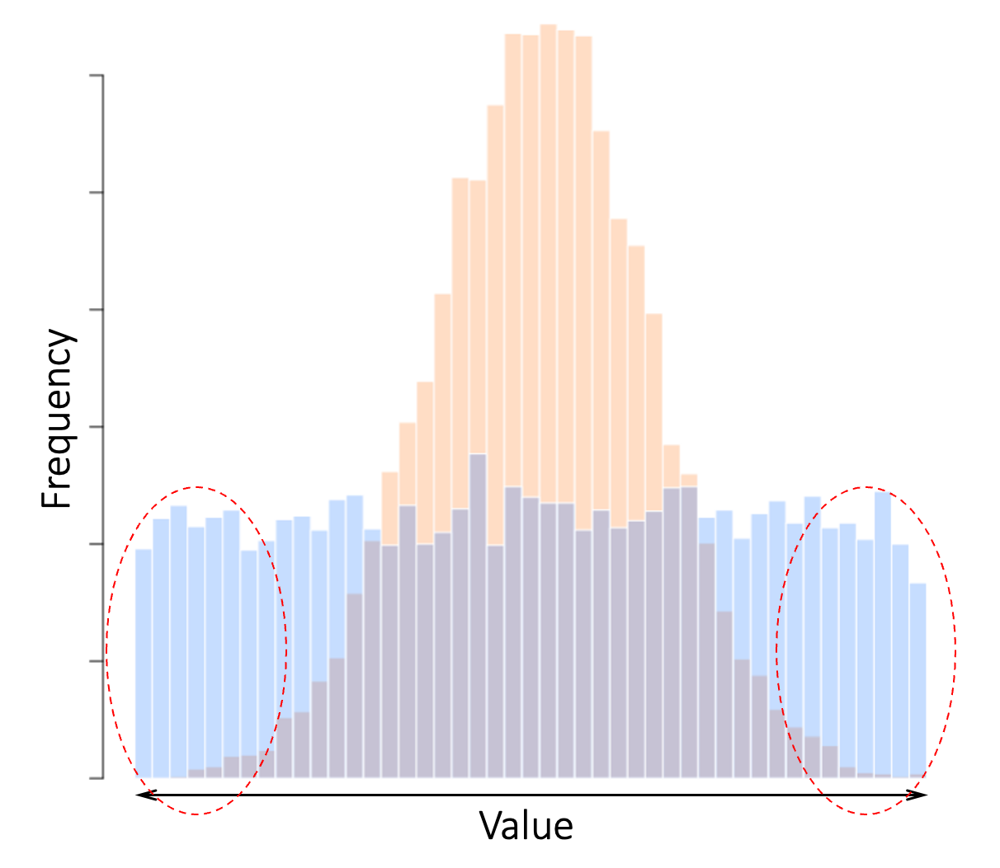
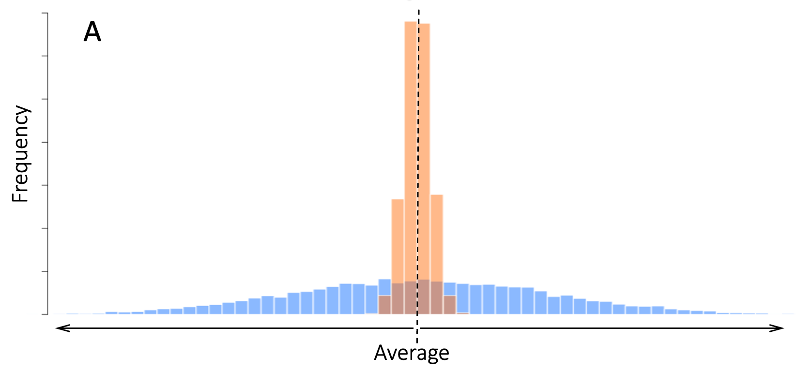
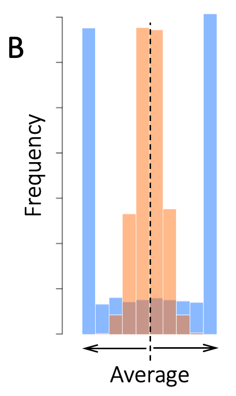
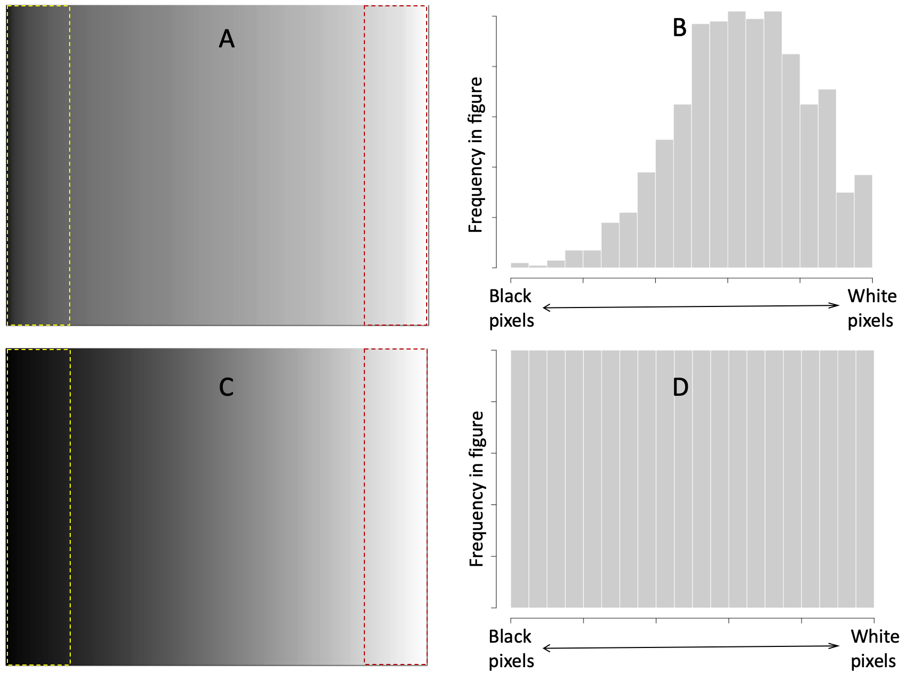
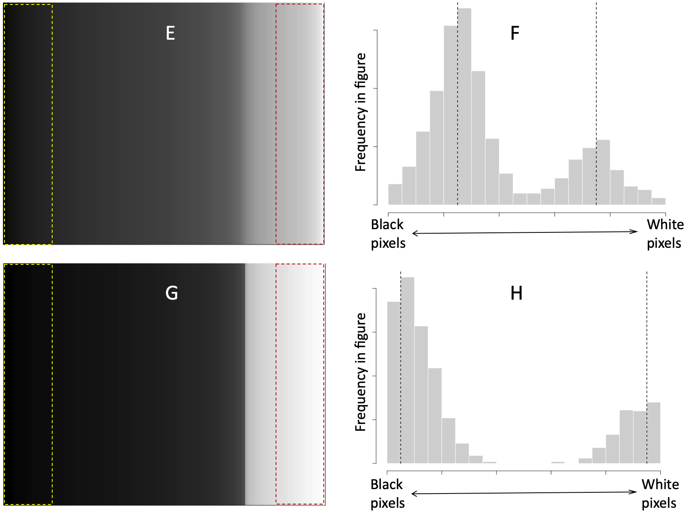
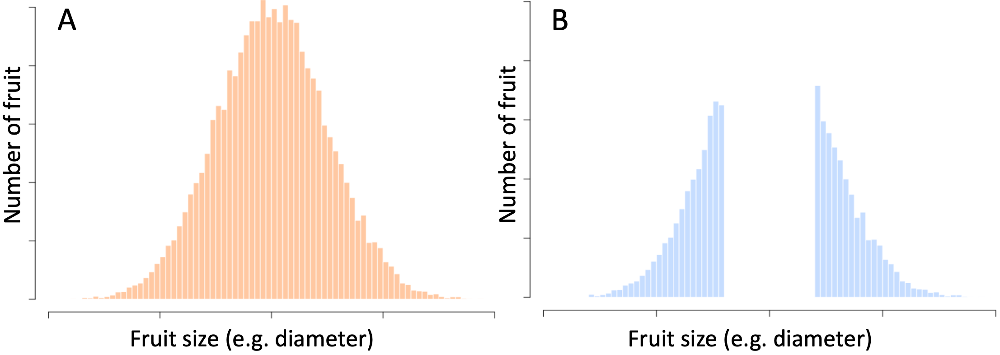

1 What is Polarization?
The Merriam-Webster dictionary defines polarization as “division into two sharply distinct opposites” 4. This succinct definition gives us a qualitative sense of what polarization is, but leaves many details undefined.
To start with, what is it that gets divided into “sharply distinct opposites”? Presumably, it’s the distribution of a characteristic of the members of a group. The group members could be people, or corporations, soccer teams, nations, etc. The characteristic of interest must be a measurable property of the group members, for example income, age, or strength of feeling regarding some issue. This quantity must have a range of values, so that its distribution can potentially be divided into “distinct opposites”.
So, if polarization is about changing distributions, what do un-polarized and polarized distributions look like? Figure 1.1 shows an example. The horizontal axis represents the range of values of the property of interest within a group (e.g. annual healthcare expenses), divided into ranges (e.g. 10% intervals) so that group members with similar values are lumped together. The vertical axis shows the frequency with which each value is observed in the group (e.g. the population of a country). The ochre histogram represents the unpolarized distribution. Most of its observed values fall near the average, but there is some variation around that average value, resulting in a bell-shaped curve. The double-peaked blue histogram is an example polarized distribution of the same group-property. The greater the degree of polarization, the further apart the two blue sub-populations will be.

Figure 1.1. An example of polarization. The ochre histogram represents the distribution of a property within a population. The horizontal axis represents the range of values divided into consecutive intervals, and the vertical axis shows the frequency with which each value is observed in the population. The double-peaked blue histogram represents an example distribution of the same property in the same population after polarization.
In the above example, the two blue sub-distributions are roughly equal-sized, and each is shaped like a bell-curve. In general, the two opposing, polarized, sub-populations may be different sizes, and their distributions need not be bell-shaped. Also, some characteristics, such as market-share, are naturally bounded, whereas for some other characteristics (e.g. total wealth), polarized sub-populations can move further and further apart.
But, if a polarized distribution is made up of two “sharply distinct” and “opposite” sub-distributions, what does it mean for a population to become more or less polarized? To allow for such comparisons, it is useful to define polarization as a process in which the frequency of mid-range values of a distribution is reduced, while the frequency of observed values at the two extremes is increased. For example, the distribution in Figure 1.2A is more polarized than the ochre distribution in Figure 1.1, but less polarized than the blue distribution in that figure. Visually, we can detect two sub-populations at opposite ends of the distribution (dashed ovals), but there are also many population-members with intermediate values between these two sub-populations.
Figure 1.2B is an example of more extreme polarization. Note the middle-ground is empty. The two sub-populations are far apart. In this case, I have assumed the characteristic being polarized is something bounded (say the fraction of leisure time that Seattleites spend outdoors), hence the very tall bars at the extremes of the two sub-distributions. Together, the examples in Figure 1.2 demonstrate how it is useful to think of polarization as a process that changes the shape of the distribution of a population-characteristic. Using this more nuanced definition reveals an interesting correspondence between polarization and inequality.

Figure 1.2. Examples of partially polarized and highly polarized population-distributions. A. The same population as in Figure 1.1 in a state of weak polarization. B. The same population in a highly polarized state.Like polarization, increasing inequality implies that a quantity becomes more spread out. But, in contrast to polarization, inequality does not imply that the middle-ground is depleted. In Figure 1.3, neither the ochre nor the blue distribution is polarized: There are no opposing sub-populations, and the middle-ground is well-occupied. But in relative terms, the blue distribution is more polarized than the ochre distribution: It has many more extreme cases (marked by the dashed oblongs). In this sense, even though neither of the two distributions in Figure 1.3 can be said to be polarized, the blue distribution represents both a more unequal and also a more polarized group.

Figure 1.3. Two unpolarized distributions can nonetheless exhibit different degrees of polarization. Neither distribution has distinct sub-populations or a depleted middle-ground. But compared to the ochre distribution, the blue distribution is more polarized (see highlighted extreme values).
Over the years, many mathematical indices of inequality and polarization have been developed 1–5. The discussions in the rest of this book don’t need these indices, so I will not say more about them, except to note that we can reliably quantify both inequality and polarization when needed.
Figure 1.4 offers an intuitive visualization of how increasing inequality is accompanied by increasing polarization. In this example, the blue and ochre distributions are both single-peaked and bell-shaped. So, neither distribution can be said to be polarized. But the blue distribution is much more unequal and spreads far beyond the range of the ochre distribution. In panel B, I have simply summed up the number of blue observations that fall outside the range of the ochre distribution. This is just a visualization trick, but it highlights how much more polarized the blue distribution is compared to the ochre, even though without reference to the ochre distribution we would not consider the blue distribution polarized 5.


Figure 1.4. Visualization of polarization the relationship between polarization and inequality. A. Both the ochre and blue distributions are single-peaked and unpolarized. B. Compared to the ochre distribution, the blue distribution has many more extreme-valued cases and is therefore more polarized.
I presented the above discussions in abstract terms to emphasize their generality. Figure 1.5 offers intuitive visualizations using grayscale images. The images are shown in the left column. The corresponding grayscale-value distributions are shown to the right of each image. In each image, grayscale values are ordered left-to-right, with the darkest pixels at the left and the lightest pixels at the right. Two equal-sized regions at the two extremes of the pixel-intensity are highlighted in every image. Note how, even though pixel-values in panels A and C are not polarized, the extreme sub-populations in these images are more at odds with each other than the corresponding regions in the clearly-polarized figure in panel E. We would miss this distinction if we defined polarization strictly as a distribution with two distinct populations (the images in panels A and C show no clear break between light and dark pixels, whereas the images in panels E and G do).


Figure 1.5. Grayscale images showing different degrees of inequality and polarization. Per-pixel grayscale intensity values are ordered left to right in all images. Dashed rectangles mark extreme-value regions of the same size for easy visual comparison. In panels A and B, grayscale values are skewed toward white and have a single-peak. In C and D, every grayscale value between black and white is represented by an equal number of pixels. In E and F, grayscale values are sub-divided into a darker and a lighter group. G and H show a similar but more extreme distribution. In panels F and H, dashed vertical lines mark the average value of each sub-population. Note how the two lines are further apart in panel H.
1.1 Imposed Versus Internally-Driven Polarization
Many sequences of events can lead to polarized states without going through a gradual process of polarization. Imagine for instance a farmer preparing fruit for shipment to a supermarket chain. The supermarket will not buy fruit that are too small or too large. So, after sending her produce to the supermarket, the farmer is left with only fruit that are very small or very large, a highly polarized distribution, as illustrated in Figure 1.6.

Figure 1.6. Polarization caused by a change in population. A. Hypothetical distribution of the sizes (e.g. largest diameters of all recently-picked fruit – say apples – at a farm/orchard). B. Distribution of the sizes of the remaining fruit after all medium-sized fruit have been sold.
The above example is representative of a whole class of situations in which the distribution of something changes by removing or adding members to the population 6. In these situations, the beginning and end populations are not the same. So, strictly speaking, even though we end up with two sharply polarized sub-populations (e.g. large fruit versus small fruit), the process that created these two sub-populations did not involve changing the properties of individuals in the population.
The population in Figure 1.6B can be studied as a polarized population. But we have to be careful to note that this kind of polarization is an artefact of how we chose our samples. Everything I say in the rest of this book will be about polarization as a process that changes the distribution of a value of interest among the members of a fixed population (nobody is added or removed).
References
1. Cheng, S., Levine, A. & Martin-Caughey, A. Using Relative Distribution Methods to Study Economic Polarization Across Categories and Contexts. Sociol. Methodol. 55, 91–120 (2025).
2. Lorenz, M. O. Methods of Measuring the Concentration of Wealth. Publ. Am. Stat. Assoc. 9, 209–219 (1905).
3. Boyce, J. K., Zwicki, K. & Ash, M. Measuring Environmental Inequality. Methodol. Ideol. Options 124, 114–123 (2016).
4. Wolfson. When Inequalities Diverge. Am. Econ. Rev. 84, 353–358 (1994).
5. Rice, S. A. The Behavior of Legislative Groups: A Method of Measurement. Polit. Sci. Q. 40, 60–72 (1925).